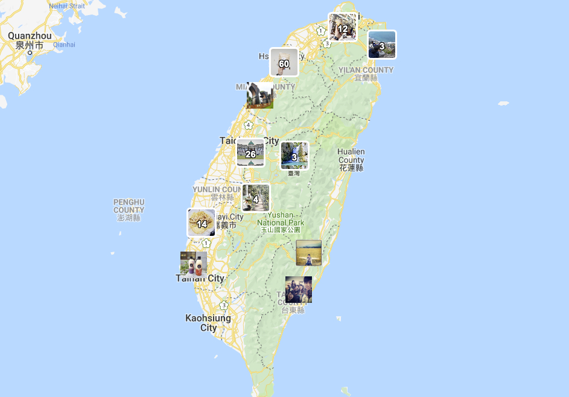

Architecting Agentic AI, Knowledge Graphs & Frontier NLP
Dr. Yen-Hao Huang is an AI Engineer at Taiwan Semiconductor Manufacturing Company (TSMC) and a Computer Science Ph.D. graduate from National Tsing Hua University. He specializes in Large Language Model Agentic Question Answering, Graph Neural Networks, Contextual Emotion Representation, and AI applications in advanced semiconductor systems.
About Me
I am an AI Engineer at TSMC and earned my Ph.D. from the IDEA Lab in the Department of Computer Science at National Tsing Hua University (NTHU). My research centers at the intersection of Agentic AI Reasoning, Graph Neural Networks (GNNs), Natural Language Processing (NLP), and Affective Computing.
Throughout my career, I have investigated human-centered behavioral patterns in natural text and speech, uncovering latent structure in social media expressions, emotional state dynamics, mental health identification, and news credibility. Recently, my work expands into shared-context agentic graph reasoning for multi-agent scientific question answering (collaborated with MIT), auto-summarization, and intelligent semiconductor engineering assistants.
Featured Research Spotlight
SAGE-QA: Shared-Context Agentic Graph-Enhanced Question Answering for Scientific Reasoning
Developed as part of an international joint research effort with MIT (Prof. Markus J. Buehler's lab), SAGE-QA introduces a novel multi-agent question answering framework. By integrating shared-context agentic reasoning with knowledge graph embeddings, SAGE-QA dynamically retrieves, synthesizes, and verifies complex multi-hop information across heterogeneous scientific papers.
Work Experience
AI Engineer
Driving cutting-edge AI engineering, machine learning pipelines, Large Language Model deployments, and intelligent domain assistants for semiconductor manufacturing and data analytics.
Joint Research Collaborator
Collaborated on advanced multi-agent scientific reasoning, graph-enhanced question answering architectures (SAGE-QA), and Graph-RAG knowledge discovery models with MIT research teams. Published in MRS Communications.
Corporal
Fulfilled alternative military service responsibilities in Nantou County, Taiwan.
Ph.D. Researcher
Conducted fundamental research in Natural Language Processing, Graph Neural Networks (ConTextING), contextualized affect representation (CARER), and text summarization (PIECE, LeCAR). Authored over 20 peer-reviewed conference and journal publications.
Research Intern
Researched e-commerce text classification and contextual feature extraction for news credibility and user sentiment analysis.
Software Engineering Intern
Leveraged Docker Container techniques for automated manufacturing system deployment. Honored with the Best Intern Award in the IT Support Team.
Selected Publications
SAGE-QA: Shared-Context Agentic Graph-Enhanced Question Answering for Scientific Reasoning
2026LeCAR: Leveraging Context for Enhanced Automotive Specification Retrieval
2024Leveraging Conflicts in Social Media Posts: Unintended Offense Dataset
2024PIECE: Protagonist Identification and Event Chronology Extraction for Enhanced Timeline Summarization
2024TERMS: Textual Emotion Recognition in Multidimensional Space
2023Boosting Factual Consistency and High Coverage in Unsupervised Abstractive Summarization
2023ConTextING: Granting Document-Wise Contextual Embeddings to Graph Neural Networks for Inductive Text Classification
2022Graph Knowledge Transfer for Offensive Language Identification with Graph Neural Networks
2022Linguistic Patterns for Code Word Resilient Hate Speech Identification
2021Libra: A Linguistic Bipolar Disorder Recognition Approach
2021Conquering Cross-Source Failure for News Credibility: Learning Generalizable Representations Beyond Content Embedding
2020EmotionX-IDEA: Emotion BERT -- An Affectional Model for Conversation
2019CARER: Contextualized Affect Representations for Emotion Recognition
2018Technical Expertise
Agentic AI & LLMs
Graphs & Deep Learning
Semiconductor & Systems
NLP & Affective AI
Featured Applications

Instagram Map Tool
Interactive web application visualizing geographical location tags and spatial metadata extracted from Instagram media posts.
GitHub Repository
Emotion Map
Spatiotemporal emotion visualization platform mapping textual affect signals across social conversations.
GitHub Repository